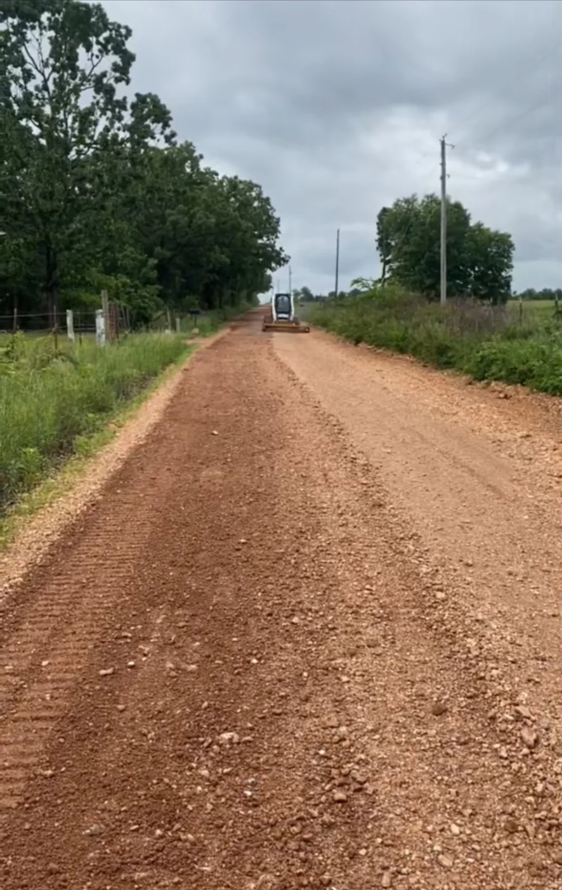
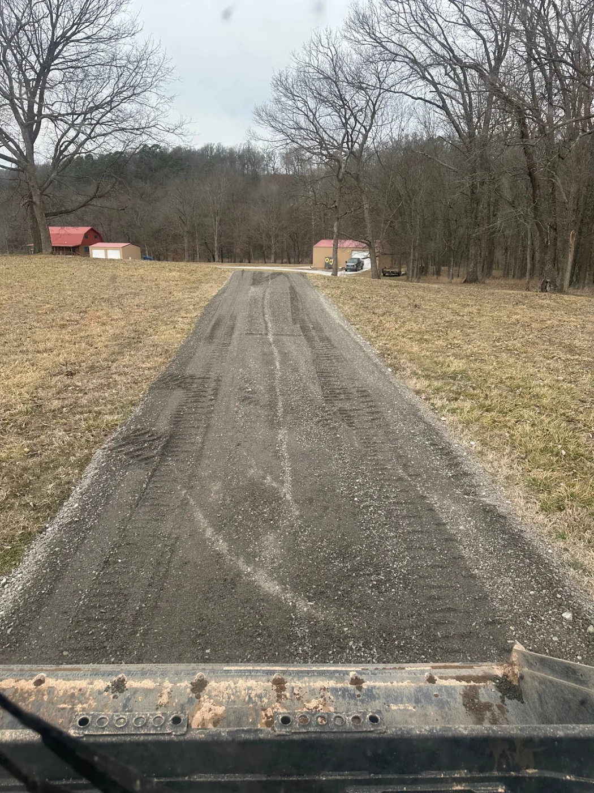
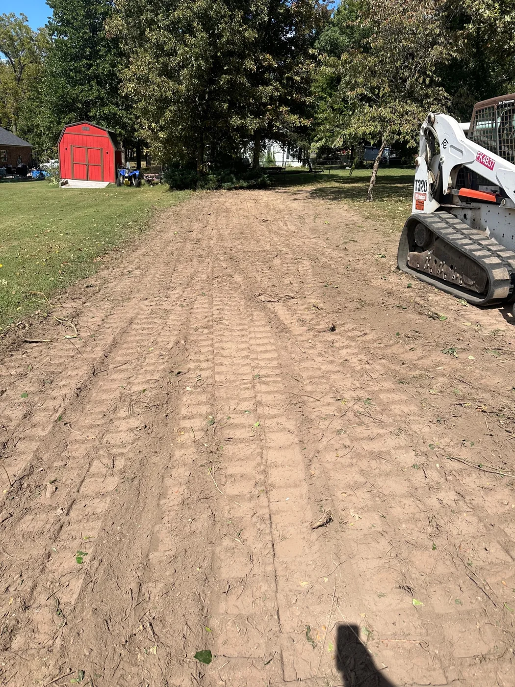
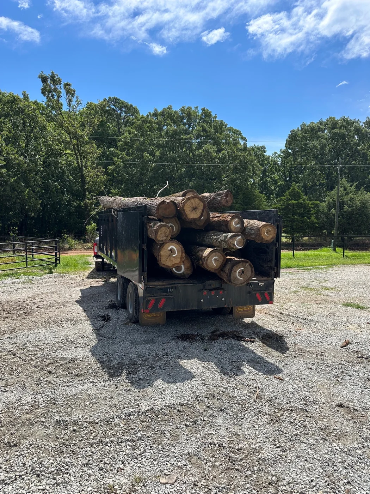

Driveways & Access Roads • Grand Lake, Oklahoma
Driveways
& Access Roads
Driveways and private access roads built with the grade, soil conditions, and water movement in mind from the beginning.
The Work
Access that is built to hold up.
This page represents multiple Rafter E driveway and access-road projects throughout the Grand Lake area. Every property is different, and the road has to be built around the conditions that are already there.
Two of the biggest challenges are soil conditions and steep terrain. Our focus is on establishing the right grade, placing the right material, and managing water so the finished road has the best chance to perform over time.
In the Field
Built around the property and the water.




What We're Proud Of
We build to last.
Good drainage is not an afterthought. It is part of the road from the beginning, especially on steep ground or where water can quickly damage an improperly shaped driveway.
“What I’m most proud of is that we build driveways and access roads to last, with proper water drainage designed into the project from the beginning.”
Need Better Access?